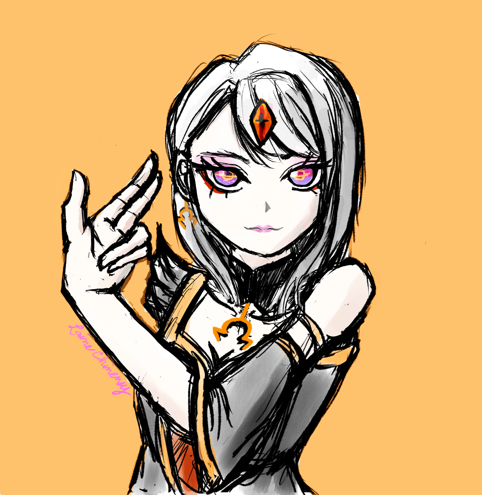
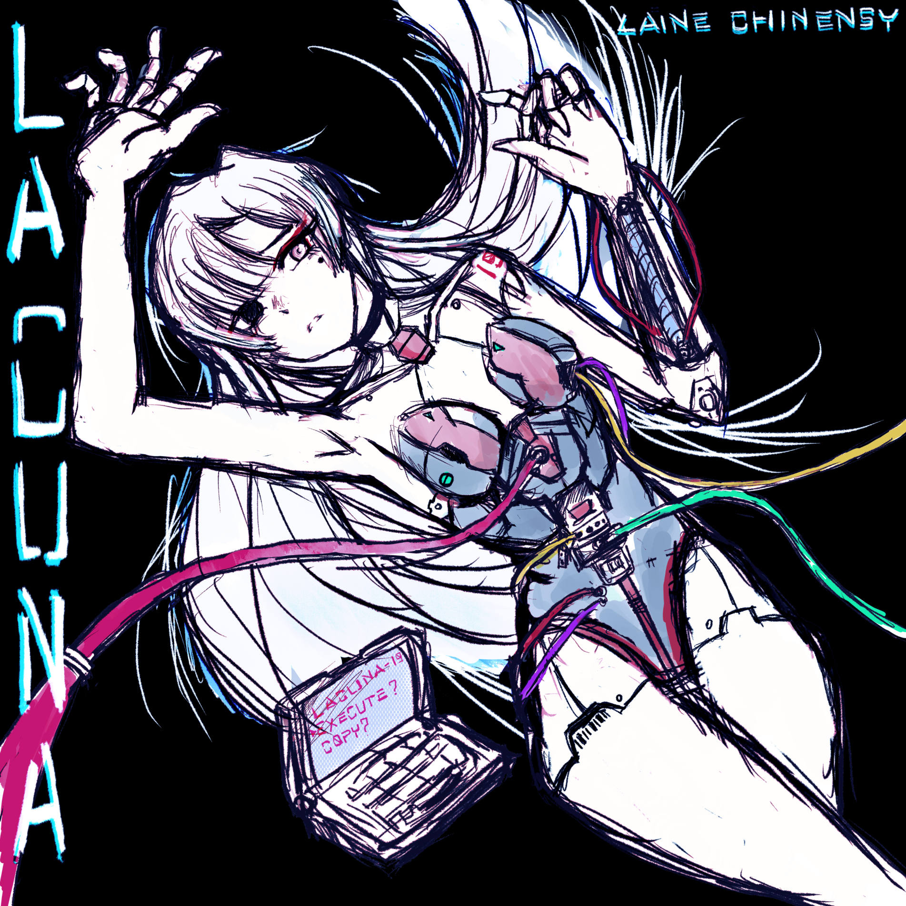

Communion across the expanse
Laine Chinensy
Void Priestess · Cantor Segundus
Adeo mi Lumen, Voidire. You may find me elsewhere, beyond the Shore of Evernaught...

The latest albumLACUNAListen on BandcampFor when forever ends, only my melody shall remain.